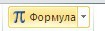
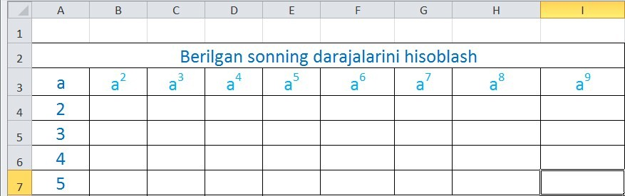
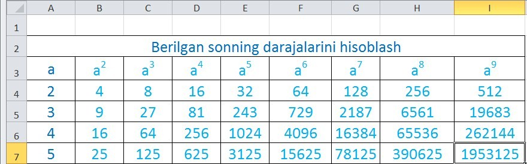
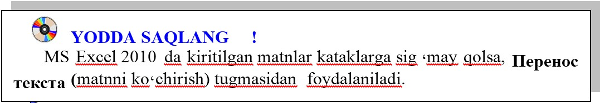

3-DARS. MUROJAATDAN FOYDALANIB AMAL BAJARISHDA NUSXALASHNING AFZALLIGI
Murojaatdan foydalanib amal bajarishda nusxalardan foydalanish orqali, bajariladigan amallarni bir munchga osonlashtirish imkoniyati mavjud. Murojaatlardan foydalanib nusxalashning afzalliklarini quyidagi mashqlarda ko‘rib o‘tamiz.
1-mashq. a sonini 9 chi darajasigacha hisoblash.
Bajarish:
o‘nta ustun va oltita satrli jadval hosil qilamiz; birinchi satr kataklari tugmasi yordamida birlashtirilib, “Berilgan sonning darajalarini hisoblash” matni yoziladi;
A ustunga a soninig qiymatlari kiritiladi;
MS Excelning Вставка- вставка формулу  ketma-ketligini tanlab, a ning quyidagi darajalarini yozamiz:
B4 katakda berilgan sonning kvadrati ya’ni =$A4*A4 amali bajariladi. Ushbu katakning o‘ng pastki burchagiga sichqonchaning ko‘rsatkichini keltirib, chap tugmasi bosilgan holda ustun bo‘yicha pastga qarab siljitiladi va B7 katakda to‘xtatiladi;
B7 katakning o‘ng pastki burchagiga sichqonchaning ko‘rsatkichi keltirilib, chap tugmasi bosilgan holda B7:I7 oraliqda siljitiladi. Natijada quyidagi ko‘rinish hosil bo‘ladi:



1. MS Excel 2010 elektron jadvallarini nusxalashning o‘ziga xos xususiyatlarini tushuntiring.
2. MS Excel 2010 elektron jadvalida matn ko‘chirish qanday amalga oshiriladi?
3. 3 soninig 10 darajasigacha hisoblovchi jadval hosil qiling.

1. O‘quv qurollarini xarid qilish jadvalini hosil qiling.
2. 1+22+33+44 ifodani MS Excel 2010 da hisoblang.